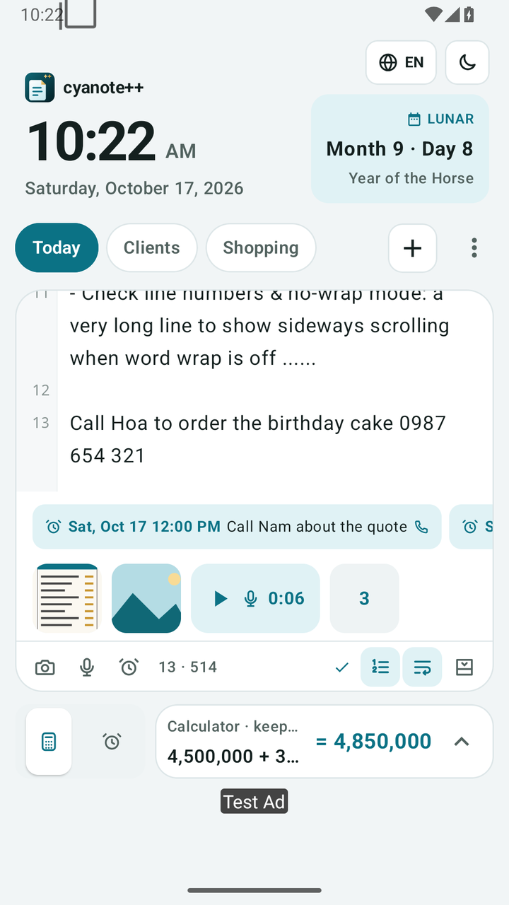
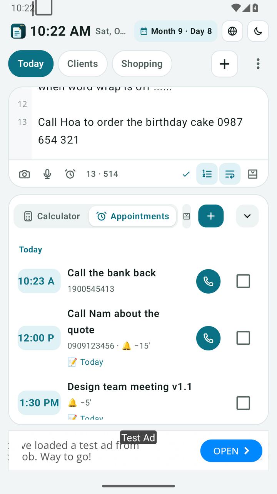
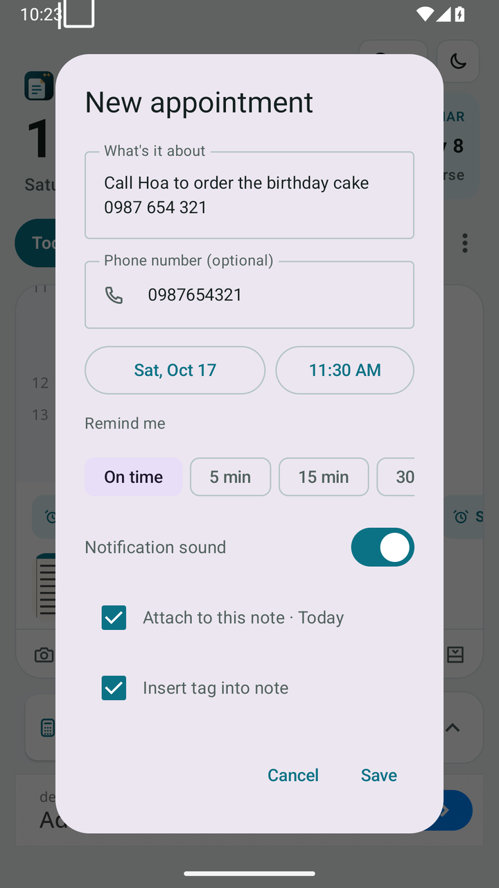
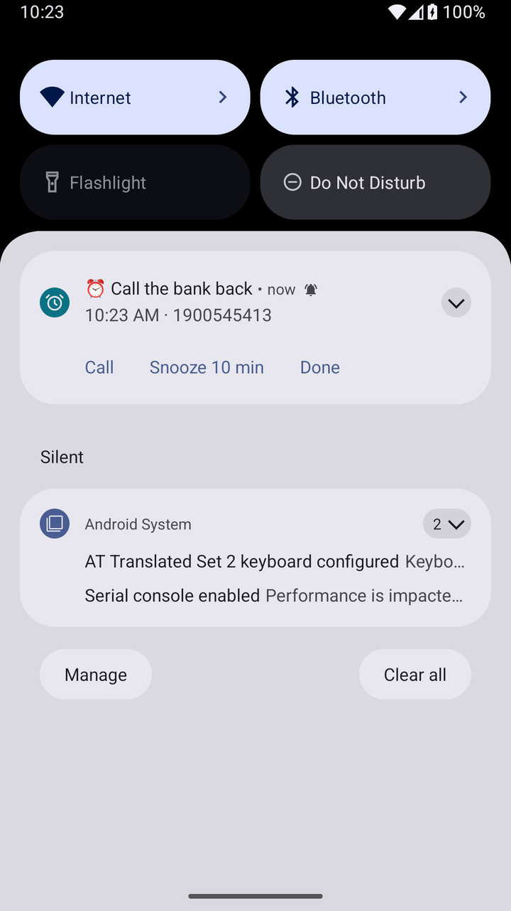
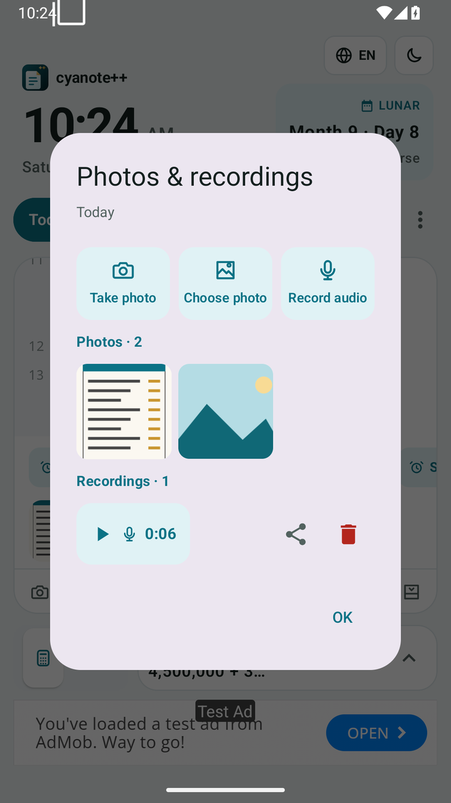
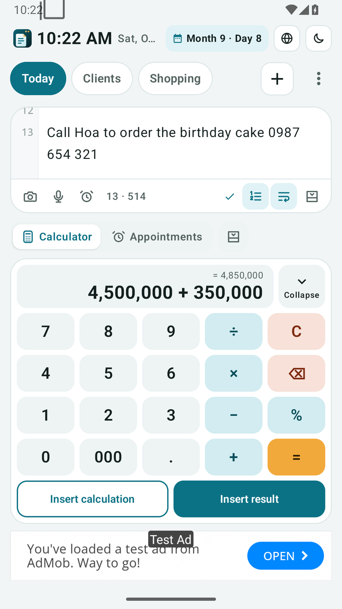
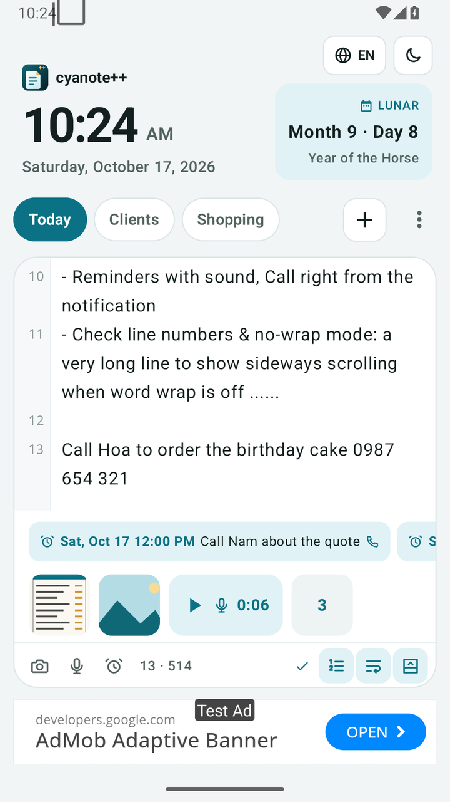
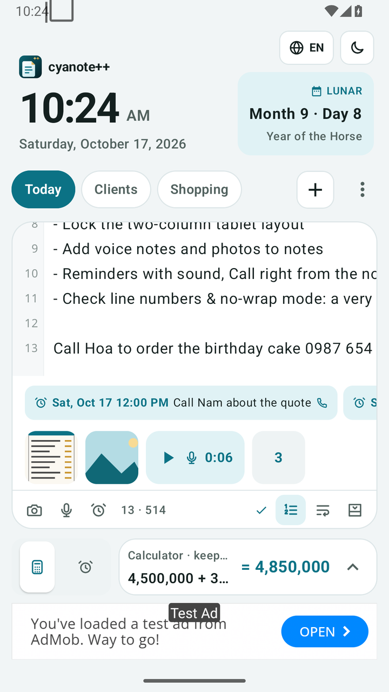
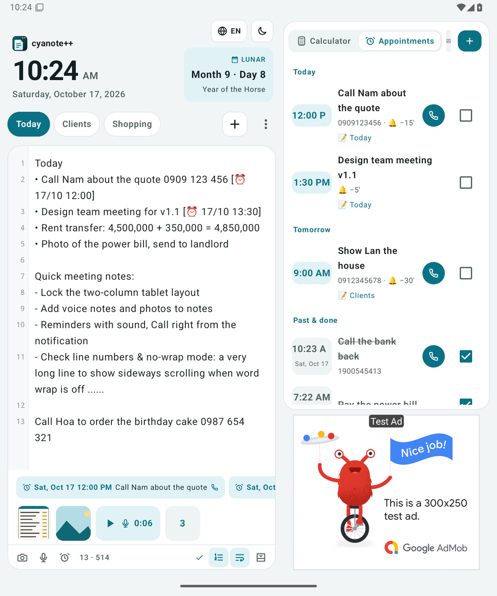
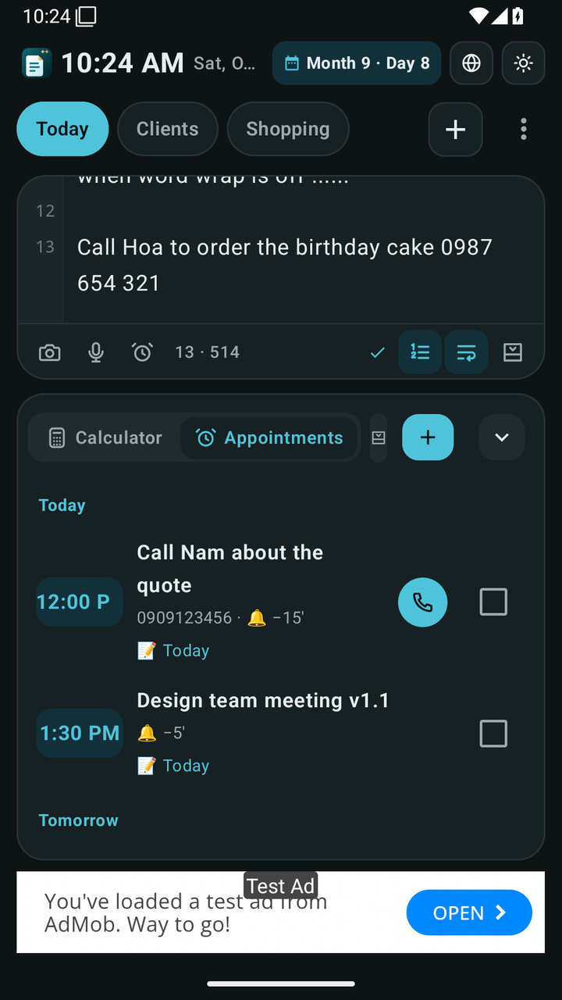

cyanote++ now remembers your appointments
Appointments & call reminders with sound, tagged right into your notes. Snap a photo or record a voice note in one tap. Notepad++-style line numbers and a word-wrap switch.

- ⏰Appointments & callsToday · Tomorrow · Upcoming, tap to call.
- 🏷️Quick tag in a noteUses the current line and detects the phone number.
- 🔔Reminders with soundCall · Snooze 10 min · Done right on the notification.
- 📷Photos & voice notesSnap, pick, record and manage them per note.
- 🧮Calculator ⇄ AppointmentsSwitch, or hide the panel for more note space.
- #️⃣Line numbers · Word wrapLike Notepad++, word wrap on by default.

⏰ Appointments & calls
Every meeting and call-back lives right under your note, grouped into Today, Tomorrow, Upcoming and Done.
- Tap ⏰ Appointments in the bottom panel (or ⋮ → Appointments & calls).
- Tap + and enter what it's about, an optional phone number, the date & time and when to remind you: on time, 5, 15, 30 min or 1 hour before.
- Tap the green 📞 to open the dialer with the number filled in. Tick ☑ when it's done.

🏷️ Tag an appointment from your note
Writing “Call Hoa about the birthday cake 0987 654 321”? Put the cursor on that line and tap ⏰ under the note.
- The line becomes the title and the phone number is detected automatically.
- Pick a time and tap Save. A tag like [⏰ 18/10 15:30] is inserted into the note.
- The note's appointments appear as chips above the status bar. Tap one to edit it.

🔔 Reminders with sound, call from the notification
At the right time your phone rings and vibrates. Choose sound or silent for each appointment. The notification has three buttons:
- Call opens the dialer with the saved number.
- Snooze 10 min reminds you again in 10 minutes.
- Done marks it complete. Tapping the notification opens the linked note.
Reminders are restored automatically after a restart or a time change.

📷 🎤 Photos & voice notes in a note
Snap a receipt or a whiteboard, or record a quick idea, straight into the note you're writing.
- Under the note tap 📷 → Take photo or Choose photo. Tap 🎤 to record, then Stop & save.
- Photos and recordings appear as a strip inside the note. Tap a photo to view it full screen, tap a recording to play it.
- ⋮ → Photos & recordings shows them all, to share or delete.
Photos are downsized to save space, and everything is included in your .zip backup.


🧮 Calculator ⇄ Appointments, or hide it
The panel under your note switches between the calculator and your appointments. Your calculation in progress is kept.
- Tap 🧮 or ⏰ on the left of the panel to switch.
- Tap Hide panel to give the note the whole screen. Tap it again to bring the panel back.

#️⃣ Line numbers & word wrap, like Notepad++
The gutter numbers real lines: a long wrapped line still gets a single number.
- Tap the 1 2 3 icon under the note to toggle line numbers.
- Tap ↩ to toggle word wrap. When it's off, long lines scroll sideways. Default: on.
📱 Tablets, landscape & dark mode
Wide screens split into two columns: the note on the left, the calculator or appointments on the right. While you type, the clock and lunar date shrink to one line to give you more room.


Install & update
- Android: download cyanote-android.apk, open it and allow “Install unknown apps”. After that the app tells you when a new version is out (the ⬇ Update label at the top, or ⋮ → Check for updates).
- When you create your first appointment, allow Notifications. On Android 12+, turn on Alarms & reminders so reminders arrive on the exact minute (the app links to the setting).
- Strong battery saver (Xiaomi, Oppo, Samsung…)? Set cyanote++ to “Unrestricted” so reminders aren't delayed.
- iOS: the beta runs through TestFlight; the App Store version updates itself.
FAQ
Does the app read my call log or contacts?
No. “Call” only opens the dialer with the number filled in. The app never places calls itself and doesn't read your call history or contacts.
Where are photos and recordings stored?
Only in the app's private storage on your device. When you export a .zip backup they're inside its attachments/ folder.
Reminders arrive a few minutes late?
Turn on “Alarms & reminders” for cyanote++ in Settings and exclude the app from battery optimization.